¿PORQUE IR DE VIAJE A MARRUECOS?
Algo de Historia
Si Marruecos está en tu lista de viajes seguramente ya has tenido algún acercamiento con esta cultura, y antes de darte las razones para emprender tu viaje, queremos asegurarnos que sabes que vas a vivir una experiencia cultural en un país musulmán.
Marruecos está separado de Europa solo por el Estrecho de Gibraltar, es la puerta de entrada al continente africano y llegar allí desde el sur de España es realmente sencillo. Las Mezquitas, los Hammam (baños públicos), las Madrazas (escuelas o universidades), las Medinas (barrio antiguo árabe “mercados”), se hacen presentes en las ciudades marroquís que también tienen un color característico.
Lugares como Fez, Marrakech, Meknes y Rabat son coloniales, mientras que Casablanca y Tánger son comerciales, todas deberían estar contempladas en tu itinerario. Aquí, la lista de 10 buenas razones por las que deberías dar un paso más hacia Marruecos.

MONTAR EN CAMELLO Y DORMIR EN EL DESIERTO
Otra de las actividades que no te puedes perder cuando estás visitando Marruecos, es ir al desierto del Sahara, este majestuoso espacio natural en donde podrás vivir la experiencia de hacer un trayecto en camello y sortear las dunas imaginándote que este era el recorrido que tenían que hacer en la antigüedad para comercializar los elementos principales y para la supervivencia de muchas de las tribus que habitaban África.
En las noches existe la posibilidad de pernoctar en el desierto y tener un avistamiento del cielo estrellado y hacerte la pregunta “¿estamos solos en este universo?”, de ser cierto que estamos solos, qué espacio tan mal aprovechado.

PERDERSE EN LAS MEDINAS
Todas las ciudades en Marruecos tienen una Medina. En la antigüedad las Medinas eran unas fortificaciones donde se desarrollaban las ciudades, el comercio, las viviendas, las madrazas, los hamman y todo aquello que se necesitaría para la vida normal de los marroquíes.
Hoy en día suelen ser la parte antigua de las ciudades y están repletas de laberintos ya que no existía planificación para la construcción. Por lo general todas tienen una plaza grande en el centro donde actualmente se concentra el comercio y puedes encontrar el souvenir ideal para traer un recuerdo inolvidable del viaje a Marruecos.
La Djemaa el-Fna en Marrakech, que referenciamos en el primer punto, es quizá la principal Medina de Marruecos.

GASTRONOMIA MARROQUI
La Djemaa el-Fna en Marrakech, que referenciamos en el primer punto, es quizá la principal Medina de Marruecos.
Para iniciar debes tener presente el proverbio y regla de la cultura marroquí para que no vayas a pasar por grosero “Durante la comida no se habla”.
Actualmente los platos marroquís están muy influenciados internacionalmente por las cocinas Mediterráneas, por la tradición de los bereberes y las tradiciones arábicas. Su plato más típico es el Tajín, un estofado de carne de cordero o pollo servido en un plato de barro que tiene una tapa del mismo material en forma de triángulo, pero que su base es circular para guardar el calor.
Si vas a Marruecos y no pruebas este plato es como si no hubieras estado nunca, cabe recordar que, según la tradición y las ciudades, el Tajín es preparado de muchas formas. Ten presente que el cuscús es un plato originario de los bereberes, es una sémola del trigo que se prepara con vegetales, garbanzos y carnes rojas y ha sido uno de los platos tradicionales que ha viajado por el Mediterráneo y por el mundo con sus variaciones y sin duda es otro de los obligados a probar cuando se viaja a Marruecos.

Datos Turísticos de Marrakech
¿PORQUE VISITAR MARRAKECH?
Como otras ciudades imperiales marroquíes, Marrakech está dividida fundamentalmente en dos partes: el centro con la gran Medina o ciudad vieja, rodeada de espectaculares bastiones de tierra roja, y, fuera de las murallas, la ville nouvelle o ciudad nueva, construida por los franceses en los años del dominio colonial y en continua expansión.
De ahí su sobrenombre de "ciudad roja". La Medina de Marrakech está llena de antiguos palacios y mezquitas, que como es costumbre en Marruecos, no están abiertas a los no musulmanes. Su lugar más emblemático es la gran plaza de Jamaa el Fna.
Al oeste de los bastiones de la Medina se extiende la ville nouvelle, con los barrios de Guéliz e Hivernage; la arteria principal es la Avenue Mohammed V, una amplia avenida arbolada que desemboca junto a una de las puertas de la ciudad vieja. En dirección este, finalmente, se encuentra el barrio residencial de la Palmeraie, una zona semidesértica llena de palmeras que en los últimos años se ha llenado de edificios.
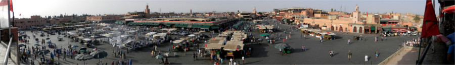
ZONAS Y BARRIOS QUE DEBES VISITAR!
* MEDINA
Es la ciudad vieja, protegida por un cordón de bastiones hechos de tierra roja que encierran un laberinto de callejuelas y palacios, mercados y mezquitas, cúpulas y minaretes. La Medina de Marrakech ha sido declarada como Patrimonio de la Humanidad por la Unesco en el año 1985, siendo actualmente uno de los lugares de visita obligada
Su corazón es la gran plaza Jamaa el Fna, al norte de la cual se abre el laberinto de los Suks (mercados tradicionales, a menudo descubiertos). Siguiendo hacia el norte se encuentran la mezquita y madraza de Ben Youssef y el Museo de Marrakech. Al sur de la plaza, en cambio, a lo largo de los siglos se han instalado los gobernantes de la ciudad. Hoy la zona está dominada por el Palacio Real, erigido sobre las ruinas de los precedentes palacios almohades, que ocupa una vastísima área rodeada de murallas (la llamada kasbah, que significa ciudadela fortificada) y no está abierto al público.
Pero se puede visitar el palacio de la Bahía y de Dar Si Said, construidos en el siglo XIX por dos visires de los sultanes y las imponentes ruinas del gran palacio Badi.
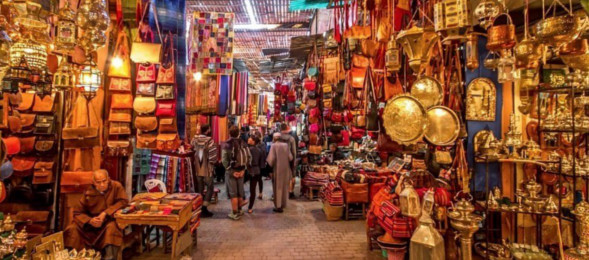
* GUÈLIZ
Es el núcleo principal de la ciudad nueva, construido por los franceses en los años treinta. El barrio es menos característico que la Medina, pero también animado. Aquí es donde se concentran los grandes hoteles internacionales y los restaurantes, las tiendas y los no muy numerosos locales nocturnos de la ciudad
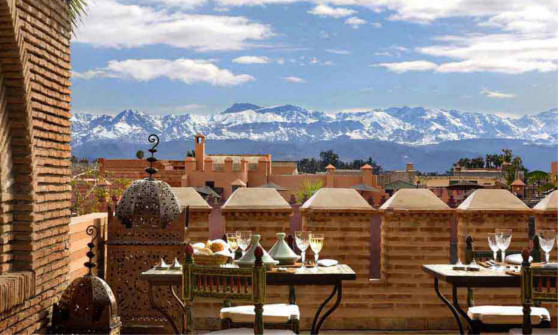
* LA HIVERNAGE
Al sur de Guéliz y un poco al oeste de la Medina se encuentra este pequeño barrio residencial que alberga villas particulares y hoteles internacionales de cinco estrellas, así como el nuevo Teatro de la Ópera y el Palacio de Congresos.
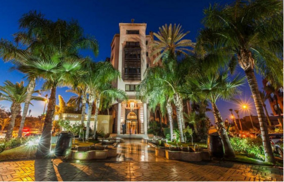
* PALMERAIE
Este vasto oasis de tierra pelada y palmeras se extiende al noreste de la Medina.Es la última frontera de los millonarios de Marrakech, marroquíes y extranjeros, que se han construido residencias de lujo, con jardines exuberantes y a menudo circundadas de altos muros para proteger la privacidad de los residentes y sus huéspedes.
Algunas son hoteles de lujo, como el Hotel Jnane Tamsna, una distinguida infraestructura en estilo ecléctico que hospeda a las estrellas de Hollywood que pasan por la ciudad, o Les Deux Tour, proyectado por el arquitecto más famoso de la ciudad, Charles Boccarà. Es una especie de Beverly Hills a la marroquí, donde se rige la norma del total respeto por las palmeras de modo que ninguna construcción puede dañar o interferir en el crecimiento de las palmeras.
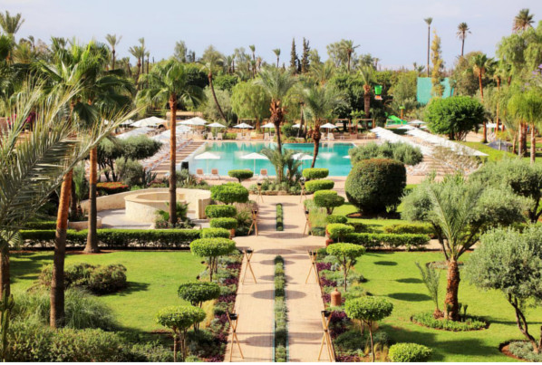
* MELLAH
Algunas son hoteles de lujo, como el Hotel Jnane Tamsna, una distinguida infraestructura en estilo ecléctico que hospeda a las estrellas de Hollywood que pasan por la ciudad, o Les Deux Tour, proyectado por el arquitecto más famoso de la ciudad, Charles Boccarà. Es una especie de Beverly Hills a la marroquí, donde se rige la norma del total respeto por las palmeras de modo que ninguna construcción puede dañar o interferir en el crecimiento de las palmeras.
Su nombre, Meliah, un apelativo común a todos los barrios judíos de las ciudades marroquíes, significa "lugar de la sal", lo cual se remonta a la época del monopolio que los mercaderes judíos tenían del comercio de la sal que se extraía de las montañas del Atlas y que se utilizaba para conservar los alimentos. La comunidad judía de Marrakech tiene un origen muy antiguo.
A principios del siglo XX contaba con unos 40.000 miembros, pero después de la Segunda Guerra Mundial, durante la cual el rey Mohammed V rechazó aplicar las leyes antisemitas promulgadas por el gobierno francés colaboracionista de Vichy, la mayoría emigró a Francia, Estados Unidos o Israel o se trasladó a Casablanca. Actualmente quedan sólo algunos centenares de personas.
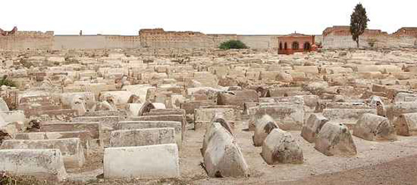
LOS MUSEOS EN MARRAKECH
Marrakech no es una ciudad de grandes museos y espacios de exposición tradicionales, pero cuenta con interesantes colecciones, públicas y privadas, de arte y artesanía marroquí antigua y contemporánea
En el centro de atención, dada la historia y la situación geográfica de la ciudad a las puertas del Atlas, está sobre todo la cultura bereber. Todo ello expuesto en un marco que a menudo es por sí mismo el protagonista: antiguos palacios de encanto oriental, con refinado mobiliario y decoración.
También es posible encontrar lugares donde se concentra la vida cultural y mundana de Marrakech de hoy: sofisticadas galerías de arte que a menudo funcionan como espacios multifuncionales, acogen exposiciones temporales de pintura, fotografía, tiendas, librerías y cafés.
DAR CHERIFA
Galería-café literario convertida en uno de los puntos centrales de la escena artística de la ciudad. Se encuentra en uno de los riads más antiguos de Marrakech, pues data de fines del siglo XVI.
En ambientes devueltos a su antiguo esplendor y decorados con un gusto impecable, se pueden ver exposiciones de arte contemporáneo o fotografía, asistir a conciertos de música tradicional (gnawa, sufí, etc.) o a presentaciones de libros, o simplemente charlar frente a un vaso humeante de té a la menta, la bebida nacional de Marruecos.
La idea es de Abdellatif Aït Ben Abdallah, el propietario de Marrakech Riads, una sociedad encargada de la venta y restauración de los riads y que ha restaurado, con gran rigor filológico, el palacio que alberga el centro cultural y otros cinco edificios dispersos por la Medina, transformándolos en maison d'hôtes.
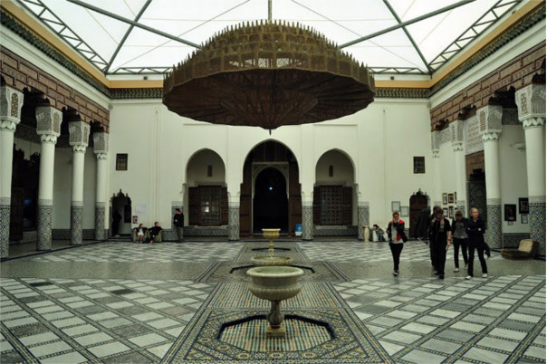
DEL GUSTO
Ideado y realizado por los diseñadores italianos Alessandra Lippini y Fabrizio Bizzarri, este excéntrico gran espacio multifuncional se utiliza también como espacio para muestras temporales, cambiando de muestra cada tres meses aproximadamente, dedicadas tanto a artistas marroquíes como internacionales.
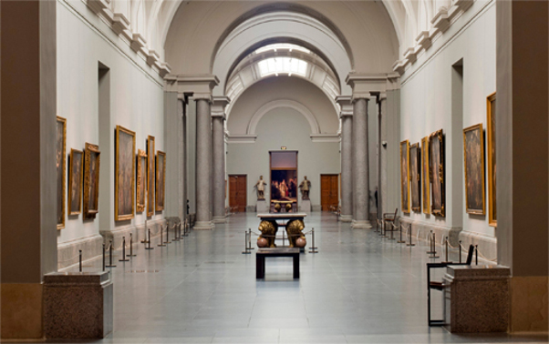
ÈE DAR SI SAID
Situado en un suntuoso palacio del siglo XIX, expone una rica colección de objetos de arte y artesanía tradicional del sur de Marrruecos, entre los cuales hay piezas de cobre, alfombras, ropas y joyas bereberes, piezas talladas de madera de cedro, puertas, persianas policromas y fragmentos de techos, además de un "minbar", una especie de púlpito transportable, que había sido utilizado en la mezquita Kutubía. El museo fue construido en el siglo XII por artesanos de Córdoba y sus lados están adornados por unos mil paneles decorados.
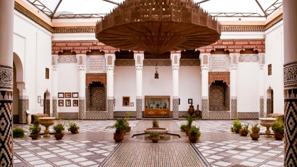
ÈE DE MARRAKECH
Inaugurado a fines de los años noventa en un palacio del siglo XIX meticulosamente restaurado, el museo se creó con el fin de tener una colección permanente de arte marroquí contemporáneo y organizar exposiciones y otros eventos culturales. Acoge también una preciosa colección de libros y caligrafía islámica y una recopilación de litografías y acuarelas de temas marroquíes
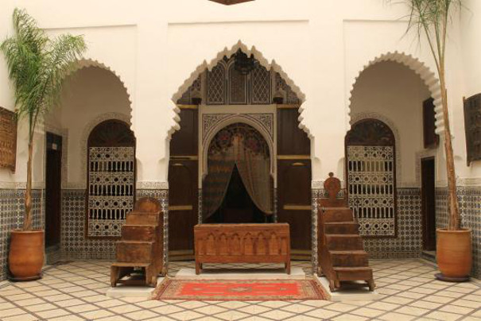
ÈE DU JARDIN MAJORELLE
La villa Majorelle, que hizo construir en los años veinte el pintor Jacques Majorelle y que compró en los años sesenta el famoso estilista francés Yves Saint Laurent, alberga una colección permanente de arte islámico, que hoy se puede visitar junto con el espléndido jardín. Hay joyas tradicionales, bordados, manuscritos miniados, antiguas piezas de madera tallada y una serie de litografías de Majorelle dedicadas al Atlas.
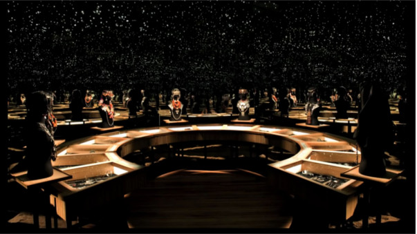
ÈE TIZKIWIN
Este pequeño museo privado, que se halla en el palacio del antropólogo-coleccionista holandés Bert Flint, cuenta con una magnífica colección de cerámicas, alfombras, tejidos y ropas bereberes.
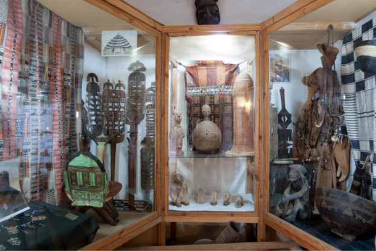
Lugares Turísticos de Ouarzazate
¿COMO ES OUARZAZATE?
Es una ciudad del sur de Marruecos, capital de la provincia homónima, que a su vez forma parte de la región de Draa-Tafilalet. Conocida como «La puerta del desierto», es una ciudad turística próxima a los montes Atlas y al valle del río Draa
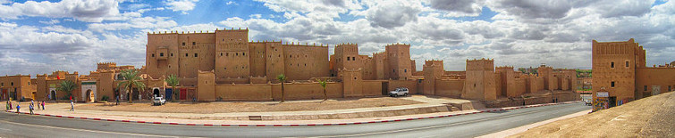
LA TOPONIMIA
En tiempos pasados Uarzazat fue un pequeño punto en la travesía de los comerciantes africanos para alcanzar las ciudades norteñas de Marruecos y Europa
Durante el período colonial francés, Uarzazat creció de forma considerable como ciudad de abastecimiento, siendo además un centro administrativo y posta de aduanas.
En el ámbito militar, la ciudad fue utilizada entre 1928 y 1934 como base de la aviación de las tropas francesas a cargo de Henri de Bournazel (llamado «El hombre de capa roja», que murió en Marruecos en 1933) para combatir contra la tribu Ait Atta, que luchaba ferozmente contra los franceses, hasta que su jefe rebelde, Assou Oubasslam, se rindió para evitar la masacre de la población replegada en las montañas.
En el año 1942, el general francés Charles Nogues y el entonces general de división norteamericano George Patton visitaron Uarzazat.
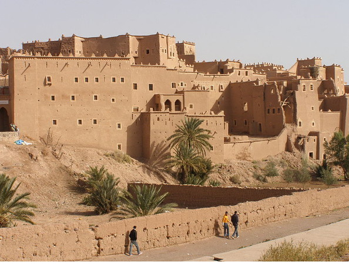
OASIS DE FINT
A 10 km al sur de Ouarzazate, encontramos este oasis de verdor entre áridas y negras rocas de las montañas. Dispone de varios establecimientos turísticos ideales para descansar en el desierto.
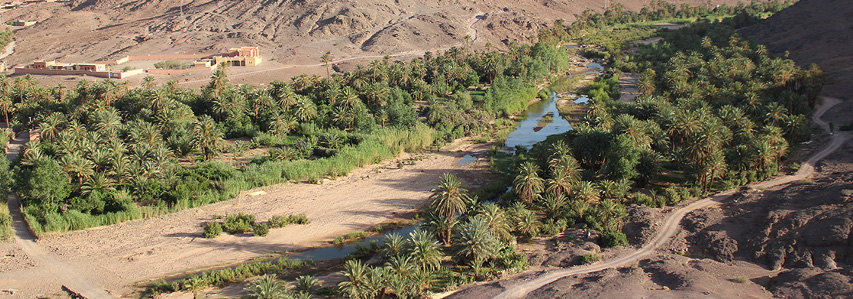
ARTESANIAS Y FOLKLORE
La ciudad alberga talleres donde se fabrican y comercializan objetos de piedra, cerámica y alfombras.
Las alfombras de Ouarzazate y sus alrededores (Tazernak) son muy estimadas, junto con las de la región del Djebel Siroua, también llamadas “ouzguita”, zona de Tazelnakht. Se caracterizan por su fondo naranja, con motivos azules, marrones, amarillos o negros, siguiendo composiciones muy complicadas confeccionadas en lana sedosa.
Las mantas son magníficamente tejidas con pelo de cabra, a rayas negras y blancas, con adornos rojos y verdes.
El Festival Nacional de alfombras Tazenakht, con el tema «la alfombra Ouzguit«, se celebra en junio.
Es típica la joyería bereber en plata incrustada o esmaltada, brazaletes, colgantes y diferentes tipos de collares.
Las Dagas son típicas de la cercana población de Azlag,
La cerámica bereber es sencilla, generalmente hecha con arcilla blanca. Los motivos decorativos son parecidos a la decoración de las manos con henna, platos, jarras, cántaros menudo grandes tamaños.
Artesanía en caña con lo que se fabrican cabezales de cama naturales , objetos ornamentales, sillones, estanterías, mesas, sillas, cestas,etc.
En cuanto a su Folclore, destacar el Festival Nacional Ahwac, una danza colectiva típica del Alto Atlas y las cercanas regiones saharianas.
El Festival de Verano con una gran cantidad de artistas locales y nacionales, música Hip Hop, Rai, arte popular, y la música amazigh.
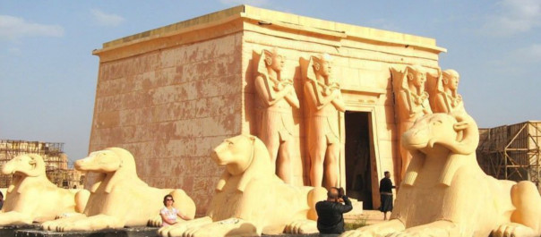
LUGARES TURISTICOS DE AitBenHaddou
¿COMO ES AIT BEN HADDOU?
Ait Ben Haddou, o Ait Benhaddou, como algunos escriben, es una kasbah espectacular, a modo de poblado de arcilla y piedra con edificios rodeados por grandes murallas. La cercanía de la kasbah Ait Ben Haddou y Marrakech (unos 190 kilómetros de distancia) convierten a esta fortaleza en una excursión habitual por turistas procedentes de la ‘ciudad roja’. Por todo ello, se trata de uno de los lugares más bellos del país y un lugar de visita obligada para quienes tengan previsto conocer el desierto de Marruecos y el sur del país norteafricano.
La kasbah Ait Ben Haddou y el resto de fortalezas de este tipo son conjuntos arquitectónicos construidos de adobe y barro, coronados por torres que sirven de defensa, en lo que podría considerarse el equivalente a los castillos medievales. Estas kasbahs fueron antiguamente grandes pueblos bereberes en el desierto de Marruecos, amurallados y diseñados con el objetivo de defender las casas, las cosechas y los palmerales que crecen junto a sus cauces. Estos pueblos formaban grandes comunidades agrarias y mercantiles con una visión muy particular sobre el Islam.
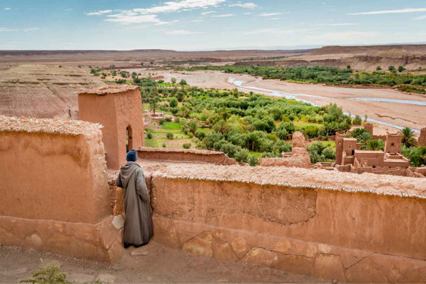
Ait Ben Haddou es una de las kasbahs mejor conservadas de todo Marruecos y representa un ejemplo sobresaliente de las fortalezas en la zona de los valles del Draa, Todgha, Dades y Sous. En Ait Ben Haddou puede apreciarse cómo las construcciones están realizadas en una posición estratégica frente a una montaña, rodeada por torres angulares y una muralla defensiva. No se sabe con determinación la fecha de la que data esta construcción pero, convencidos de su importancia, las autoridades protegieron este lugar desde el año 1953.
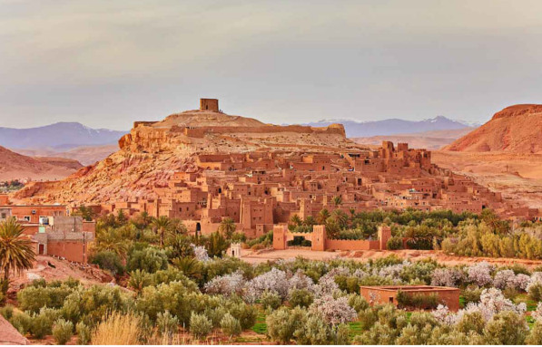
la kasbah Ait Ben Haddou fue declarada Patrimonio de la Humanidad por la UNESCO. Y eso sin contar su gran demanda y reconocimiento en el campo cinematográfico para la realización de grandes películas como Lawrence de Arabia o Gladiator, iniciativa ampliamente aceptada por sus lugareños debido al importante extra que supone para la economía del pueblo y sus alrededores
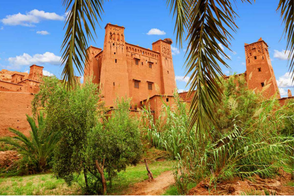
LOS PAISAJES
Durante los días cálidos de verano es complicado ver a gente pasear por las calles de Ait Ben Haddou, que parecen perderse entre las sombras de las laberínticas callejuelas y pasadizos subterráneos. Sin embargo, en el actual pueblo por el que pasa la carretera, que está muy cerca de la kasbah, hay tiendas preparadas para el turismo con ofertas en cristales puros con mezclas de distintos minerales y numerosos fósiles que deberían cuidarse como joyas arqueológicas. Para su protección, el Estado aún no tiene presupuesto suficiente, y parece que nadie aún ha tomado cartas en el asunto.
En el pueblo también podrás encontrar artesanías marroquíes de todo tipo: vasijas de barro, herramientas de hierro, cintos de cuero, lana, vidrio artesanal y otros pequeños tesoros más.
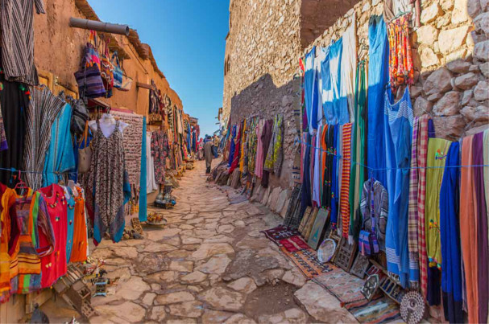
Aunque el paisaje es árido y rocoso, el agua no escasea. La tierra es de poca vegetación, aunque abundan las palmeras datileras, las higueras, los naranjos y los limoneros, así como otros árboles frutales como el almendro o el manzano. En una visión amplia del paisaje podemos ver diferentes tonalidades de rojo, según la hora del día, con sus numerosas torres fortificadas que parecen adosadas a la montaña. Como hemos dicho antes, si se puede, es muy aconsejable hacer una visita al torreón de la antigua kasbah Ait Ben Haddou, donde encontrarás maravillosas vistas panorámicas de la región con el Alto Atlas como telón de fondo. Un espectáculo único e imperdible, que te llenará de la esencia atemporal de esta tierra indómita y del modo de vida arcaico y tenaz de su gente.
La villa se instaló en la cima de una colina para escapar de los vientos glaciares de las montañas y aprovechar mejor la luz del sol. Además, de esta manera estaban cerca de las rutas nómadas del desierto de Marruecos, tenían agua y podían defenderse de los potenciales enemigos.
Los muros exteriores cuentan con dos puertas para controlar las entradas y las salidas. La organización interna de la kasbah Ait Ben Haddou se dividió en dos partes diferenciadas: la pública y la privada. Esta organización le confiere a la kasbah una estructura particular. En los espacios públicos uno puede encontrar la plaza pública, la mezquita y la escuela coránica. La parte privada es un conglomerado de casas en las que se puede ver claramente la diferencia entre las casas normales del pueblo, construidas con una sola planta y sin apenas ornamentación, y las de las familias nobles, ricamente decoradas
Podéis realizar un recorrido por Ait Benhaddou vosotros solos o bien contratar un guía que os enseñe la kasbah y os explique su historia. Si vais a contratar un guía es recomendable que fijeis el precio antes de iniciar el recorrido. Podéis buscar estos guías preguntando en la recepción de alguno de los hoteles de la parte nueva
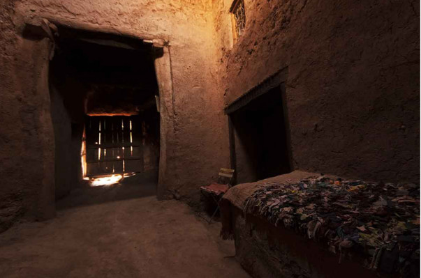
AIT BEN HADDOU Y EL CINE
Los amantes del cine seguro que sabéis que esta fortaleza ha quedado inmortalizada en multitud de películas, siendo uno de los lugares más cinematográficos de Marruecos. Su aspecto exótico y las condiciones climatológicas hacen de este ksar un lugar estupendo para el rodaje de películas. Esto ha sido muy bien aceptado por sus pobladores por suponer un incentivo para la economía del lugar, además de proporcionar trabajo de extras a los lugareños.
Aquí se han rodado escenas de una larga lista de películas desde los años sesenta, entre ellas: Lawrence de Arabia, Jesús de Nazaret, La última tentación de Cristo, La Momia, Gladiator, Alejandro Magno y más recientemente la serie Juego de Tronos. Como curiosidad comentar que una de las puertas monumentales del ksar no es original, pues fue construida en hormigón para que Michael Douglas se estrellara con la avioneta en La Joya del Nilo.
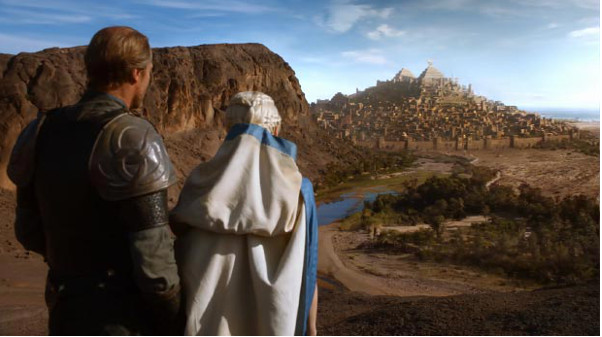
¿COMO LLEGAR?
Hay múltiples formas de llegar a Ait Ben Haddou, gracias la popularidad de este lugar. En caso de buscar algo organizado, partiendo desde Marrakech hay varias rutas organizadas, desde las que van específicamente hasta las que visitan lugares como Ouarzazate o incluso más alejados como Zagora o Merzouga, y que inevitablemente terminan pasando por este ksar.
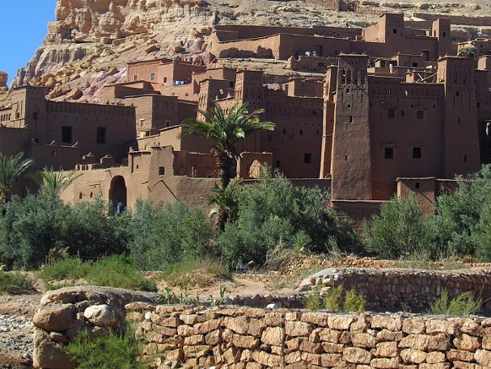
En caso de optar por un taxi no deberíamos pagar más de 200 dírhams (taxi completo y trayecto) si partimos de Ouarzazate y 600 en el caso de Marrakech. En cualquier caso, dinero más que bien invertido para contemplar uno de los paisajes más icónicos e impactantes de todo Marruecos.
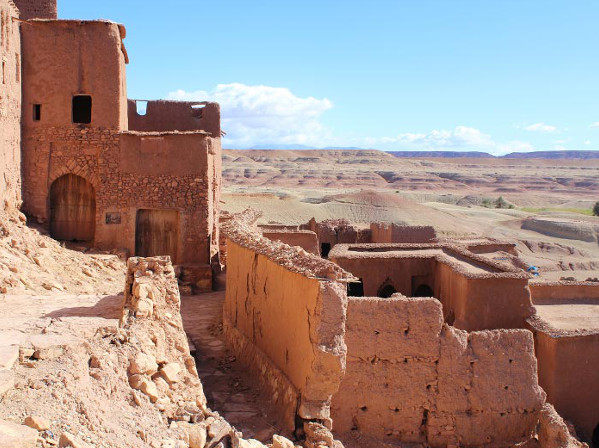
LUGARES TURÍSTICOS DE FEZ
FEZ(MARRUECOS)
Es la tercera ciudad de Marruecos, después de Casablanca y Rabat, con una población de 1 968 150 habitantes según el censo de 2010 (gentilicio: fasi, fasí o fecí). Es la capital del islam en Marruecos, de la región de Fez-Bulmán y de la prefectura de Fez. Está situada en la región antiguamente llamada Hispania Nova.
Es una de las cuatro ciudades llamadas imperiales junto a Marrakech, Mequinez y Rabat. En Marruecos está considerada como el centro religioso y cultural del país. Su universidad, famosa por el estudio del árabe y la religión musulmana, la convierte en punto de paso de un gran número de estudiantes marroquíes.
La ciudad se divide en tres zonas, Fès el-Bali, la zona antigua, dentro de las murallas, Fès el-Jdid, la zona nueva, donde se encuentra la Mellah, el barrio judío, y la Ville Nouvelle (Ciudad Nueva), la zona más amplia, creada durante la colonia francesa, en el sur de la ciudad. La medina de Fez el-Bali, la mayor de las dos de la ciudad, es la mayor zona peatonal del mundo, y fue declarada Patrimonio de la Humanidad por la Unesco en 1981. La ciudad cuenta con el aeropuerto Saïss.
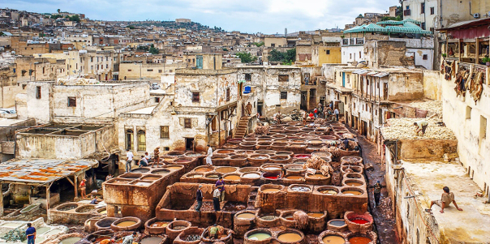
FEZ EL BALI
Ciudad Morisca del siglo IX que es una gran medina compuesta por más de 9.000 callejuelas y tiene el lujo de ser la mejor conservada del mundo árabe y, por qué no, el mayor monumento vivo de todo Marruecos. La extensa y laberíntica medina de Fes el-Bali, dicho sea de paso, también destaca por ser la zona urbana más grande del mundo sin tráfico de coches. El transporte de mercancías es se realiza en burros, carruajes y motos. Son callejuelas donde parece haberse perdido el tiempo
La medina de Fez el Bali es un gigantesco entramado de estrechas calles que pierden en todas las direcciones. Por su complejidad, es realmente difícil orientarse, incluso para los más experimentados en Marruecos. Para la visita de la medina de Fez debéis plantearos la posibilidad de contratar una guía oficial que os muestre y explique todos sus secretos
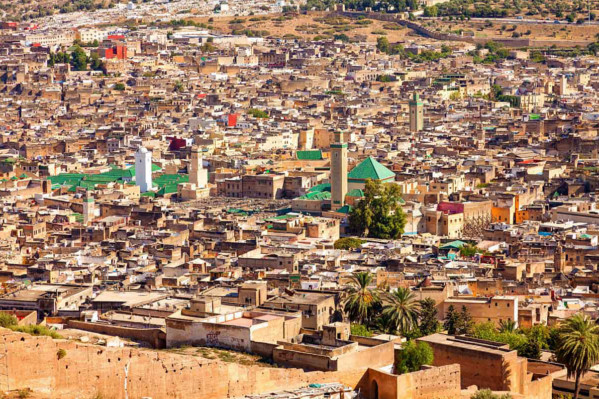
FEZ EL JEDID
Creada en el siglo XIII por los meriníes, se convirtió rápidamente en la sede del poder real. Esta parte de la ciudad esconde una densa trama urbana donde se ubican el barrio judío (Mellah) y el Palacio Real, además de animados zocos y tiendas de artesanía. Lo más destacado aquí es visitar el Palacio Real (solo por fuera, ya que está prohibido entrar) y recorrer las callejuelas de la judería, visitar su sinagoga y el cementerio judío. Merece la pena visitar la judería porque tiene un estilo arquitectónico diferente al resto de la ciudad.
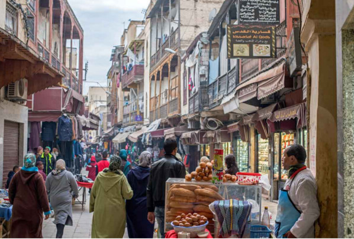
¿QUE VER EN FEZ?
La Medina de Fez el-Bali (o antiguo Fes), como hemos dicho antes, es uno de los mayores emplazamientos medievales que existen en el mundo, un lugar mágico lleno de vida. De entre los monumentos que ver en Fez, ocupan un lugar muy destacado las mezquitas Karaouine y de los Andaluces, construidas, según la leyenda, por dos herederas de un kairuaní exiliado en el siglo IX. Las puertas y murallas que las rodean potencian su magnificencia, Patrimonio de la Humanidad por la UNESCO.
A diferencia de muchas poblaciones fortificadas de su época, Fez no ha modificado sus límites originarios. Sus habitantes se han expandido hacia el suroeste y las laderas, formando un arco que se dibuja de norte a sur de la zona nueva. La mejor manera de descubrir la medina de Fes es contratando un guía que os enseñe sus secretos y maravillas. El precio de un guía por un día entero es de 250 dh aproximadamente.
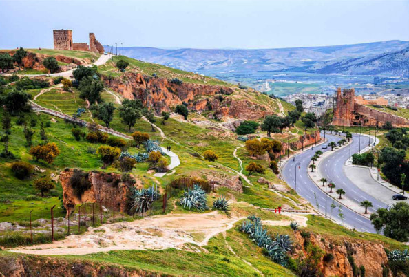
LA MEZQUITA
Otras interesantes construcciones que ver en Fez son las numerosas medersas (escuelas coránicas), como Chahrij Bouinania. Con su reloj de pared con carrillón, de 1357, fue construida en el 1300 y cuenta con bellos ejemplos de yeserías meriní y madera de tres dinastías diferentes, de entre los siglos XIII y XVII. También está llena de ejemplos de la artesanía meriní y ofrece fantásticas vistas de la ciudad vieja desde su azotea.
La mezquita Karaouine es la segunda mezquita más grande de Marruecos, después de la nueva mezquita de Hassan II en Casablanca. La mezquita de Karaouine es posiblemente el lugar más sagrado de Fez y Marruecos. Una pena que los no musulmanes no podamos admirar la belleza del interior, pero así lo regula la religión islámica precisamente por su carácter sagrado. Su minarete data del año 956 y es el monumento islámico más antiguo de Fez. El Kairaouine también regula el calendario de todas las fiestas islámicas del país. Está escondida profundamente en el corazón de la medina, es enorme pero apenas se puede obtener un buen panorama de su tamaño, ya que está ubicada entre cientos de tiendas y casas. Unas 20.000 personas pueden rezar aquí diariamente, pero como hemos dicho antes, a menos que seas musulmán no podrás entrar. También contiene una de las bibliotecas más antiguas e importantes del mundo.
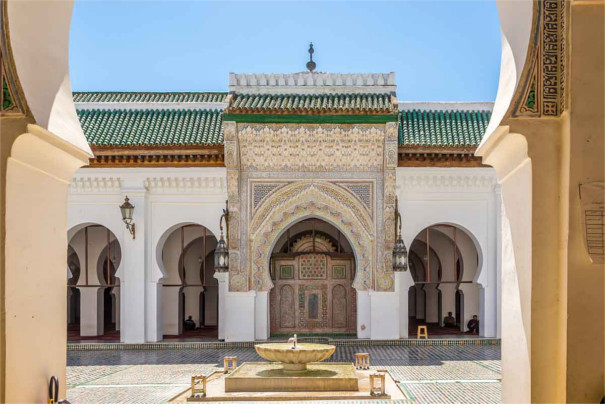
LA MEZQUITA MAUCELEO DE MOULAY IDRISS
Alberga en el corazón de la ciudad la tumba del fundador de Fes, su Santo Patrón. Es un lugar santo y venerado por los habitantes de la ciudad y por los peregrinos de diferentes regiones del país. El edificio fue restaurado por el sultán alauí Moulay Ismail, quien lo adorno con una bella cúpula piramidal. La entrada solo está permitida a los musulmanes, pero merece la pena echar un vistazo desde la puerta. La mezquita está junto a la Kbira Talaa cerca del Souk Attarine.
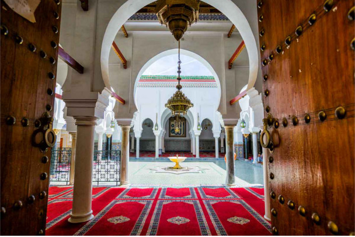